Gestión de Moldes · SIPE Informática
Sabe cuánto cuesta cada molde antes de hacerlo y cuánto ganas al entregarlo
Un solo programa para presupuestar, controlar la fabricación, registrar compras, entregar y analizar resultados. Hecho para talleres de moldes, reparaciones y mecanizados.
- Desde el navegador, sin instalar nada
- Fichaje en tablet
- Compras con foto desde el móvil
- Albaranes firmados en pantalla
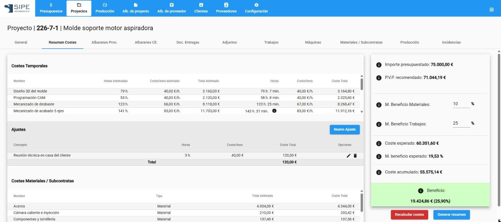
Así funciona, en cuatro pasos
El programa sigue cada molde desde que el cliente pide precio hasta que lo facturas, y lo va midiendo por el camino.
- 1. Presupuestas Estimas horas, materiales y subcontratas y obtienes un precio con el margen que tú decides.
- 2. Fabricas y controlas El taller ficha en la tablet y las compras se asignan a cada molde. Todo suma a su coste real.
- 3. Entregas Albaranes firmados en pantalla, enviados por correo y pasados a tu programa de facturación.
- 4. Analizas Ves el coste real y el beneficio de cada molde, y tus próximos precios son más precisos.
¿Quieres la explicación completa? Mira qué hace el programa, paso a paso.
Un recorrido por las pantallas
Estas son las ocho áreas principales de la aplicación. En cada una puedes cambiar de vista con las pestañas y pulsar cualquier imagen para verla en grande.
Presupuesta con datos, no con intuición
Desglosa el molde en tareas, máquinas, materiales y subcontratas y la aplicación calcula el precio recomendado con tus márgenes. Cuando el cliente acepta, un botón lo convierte en proyecto.
- Precio recomendado a partir de costes y márgenes por servicio.
- Plantillas con tus trabajos habituales para no empezar de cero.
- Estados y versiones: cada cambio queda registrado y puedes duplicar una oferta.
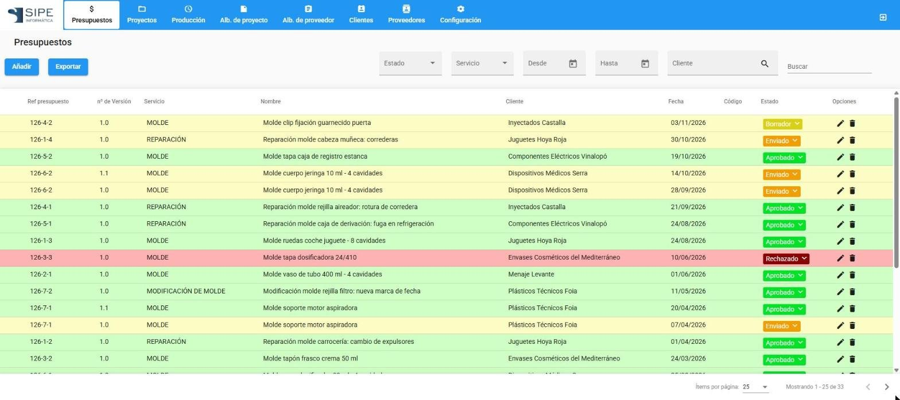
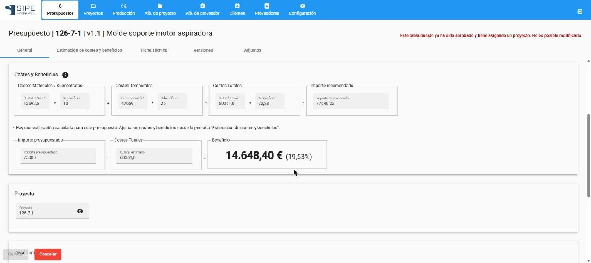

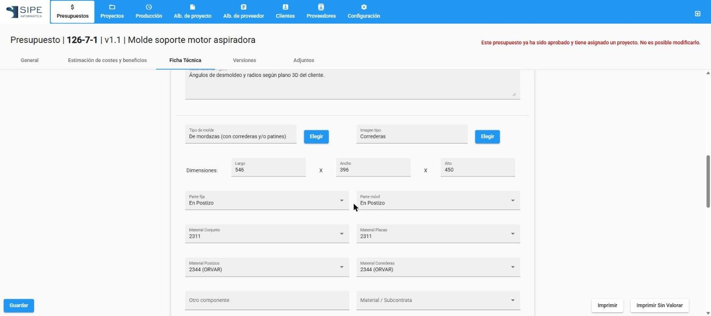
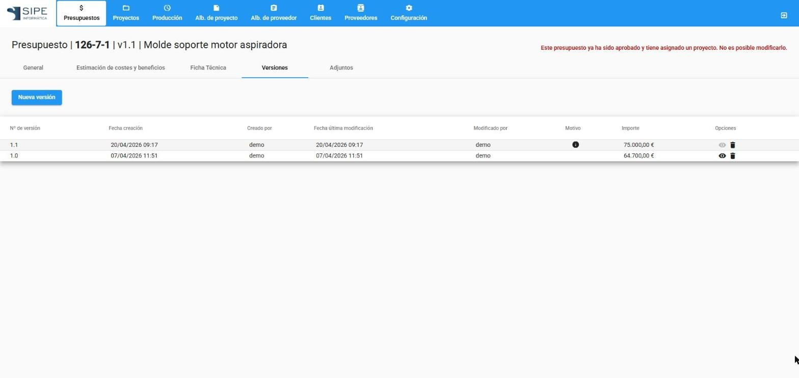
Todo un molde, en una sola ficha
Al aprobar el presupuesto nace el proyecto, que guarda la estimación para compararla con lo real. Ahí se reúnen horas, compras, entregas, planos y documentos.
- Costes y beneficio de cada molde en el propio listado.
- Estado y fecha de entrega con historial de cambios y su motivo.
- Informe de situación en PDF para contestar al cliente «¿cómo va mi molde?».

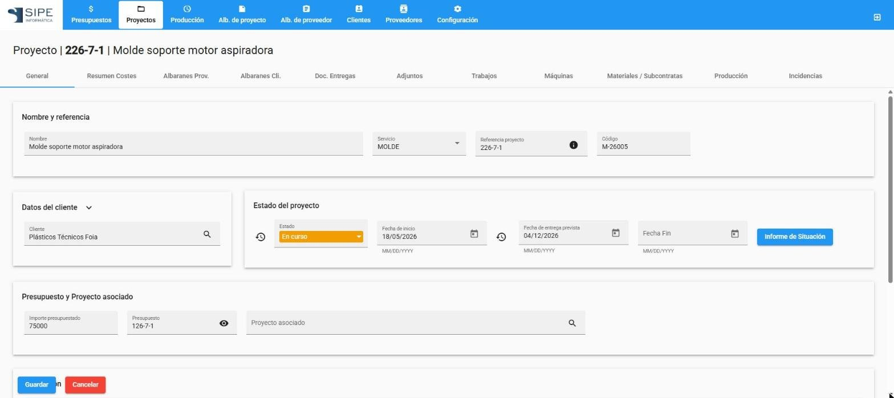
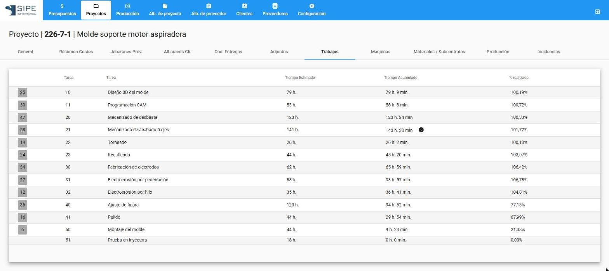
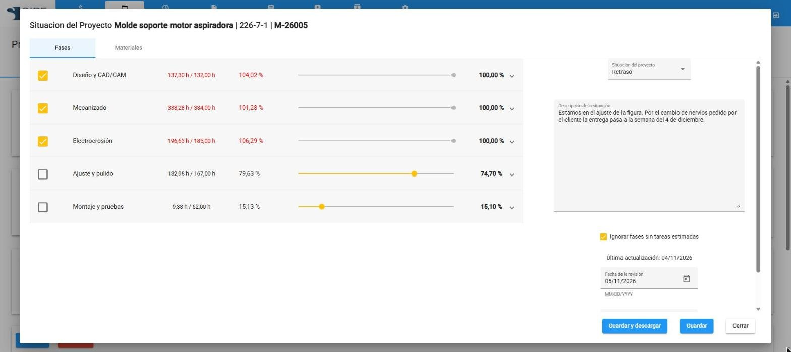
Fichar con el dedo, en una tablet
Cada operario se identifica con su código, elige molde, tarea y máquina, y empieza. La oficina ve en tiempo real quién está haciendo qué y cuánto cuesta.
- Botones grandes y teclado en pantalla, pensado para usarse con el dedo.
- Máquinas automáticas: siguen contando tiempo mientras el operario hace otra tarea.
- Reprocesos e incidencias marcados aparte para poder analizarlos.
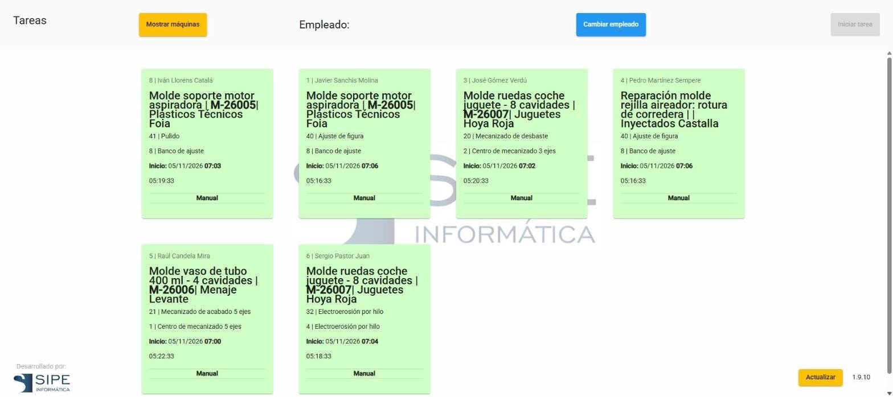
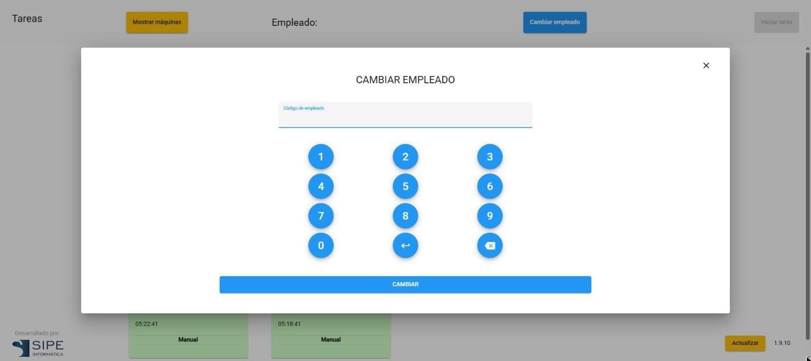
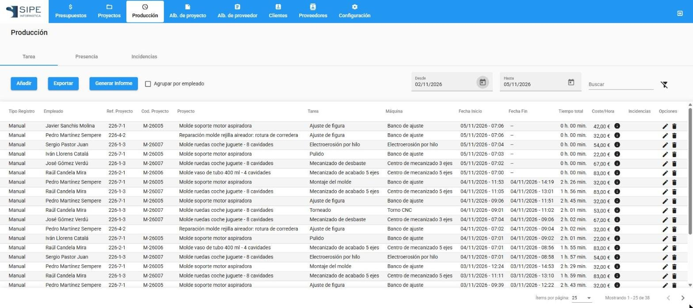
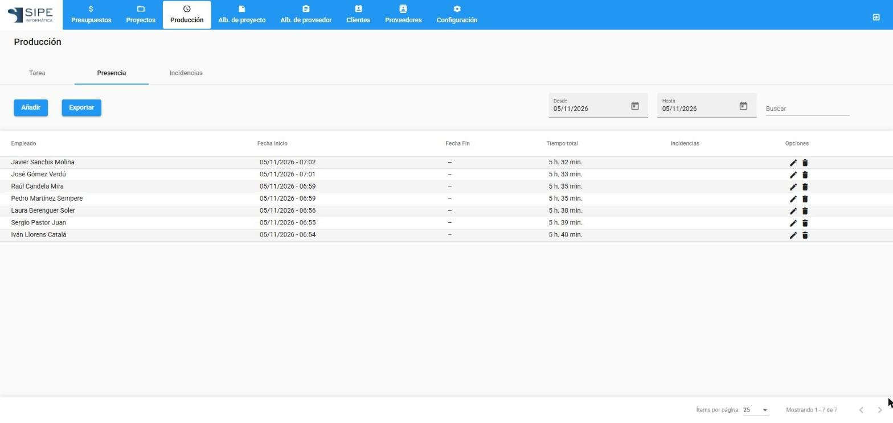
Cada euro comprado, en el molde que toca
Registra los albaranes de proveedor y asigna cada línea al proyecto correspondiente. El coste real del molde incluye así el acero, los normalizados, los tratamientos y las subcontratas.
- Imputación por línea o de todo el albarán a un solo proyecto.
- Reparto de una compra entre varios moldes.
- Cuadre de facturas: seleccionas albaranes y ves la suma para compararla con la factura del proveedor.
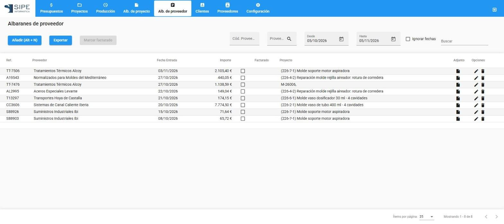
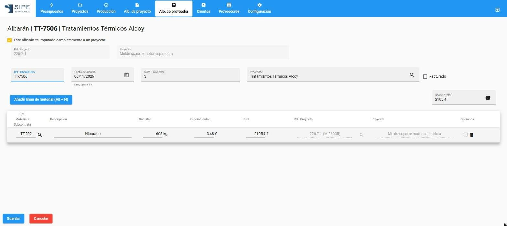

Quien recibe la mercancía hace la foto del albarán con el móvil en el momento de la entrega.
Después, en la oficina, se completan las líneas y se imputan a cada proyecto.
Entrega, firma y envía en un momento
Genera el albarán desde el proyecto, valóralo sobre el precio que quieras y facturarlo por hitos si hace falta. El cliente firma en la tablet al recoger el molde.
- Valoración flexible: sobre costes, PVP recomendado, precio presupuestado u otro importe.
- Firma en pantalla y PDF con la imagen de tu empresa, también por correo.
- Pase a facturación: exportas los albaranes a Classic Ges sin repetir datos.
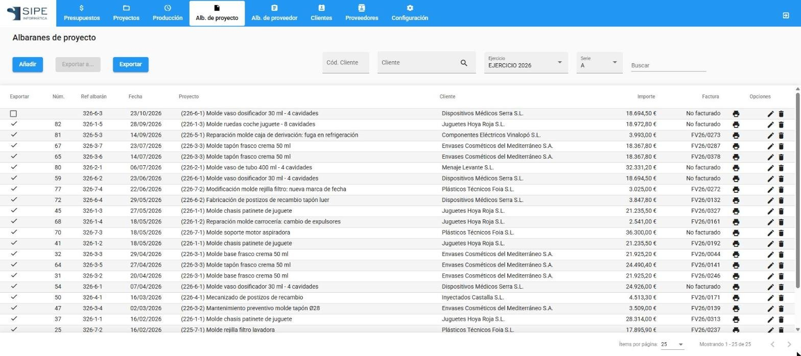
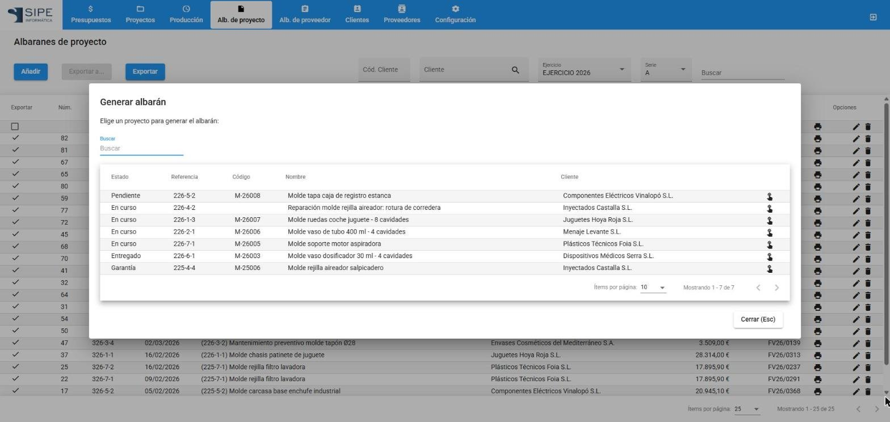
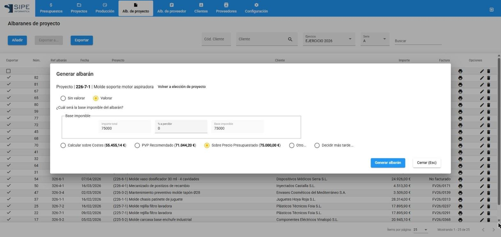
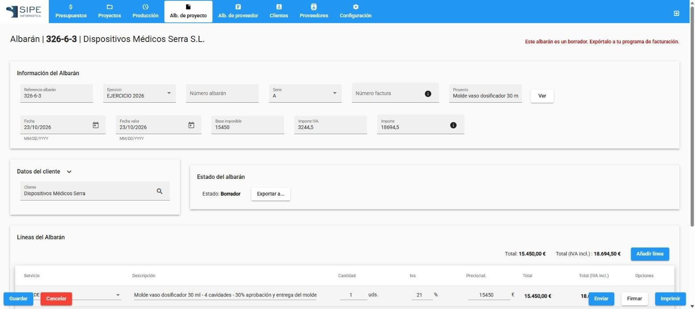
Tus clientes, ordenados y sincronizados
Las fichas de clientes y proveedores se comparten con tu programa de facturación, así que no hay que escribirlas dos veces. Y de cada cliente puedes saber cuánto te deja.
- Sincronización con Classic Ges.
- Informe de rentabilidad por cliente.
- Datos de contacto de cada cliente, incluido su email.

Documentos listos para entregar
Cualquier listado se saca a PDF o Excel, y la aplicación genera los documentos que necesitas con la imagen de tu empresa.
- Exportar lo que ves, eligiendo columnas, formato y orientación.
- Documentos: ficha técnica, estimación, situación del proyecto, resumen de costes y albaranes.
- Tu imagen: logo, colores y textos legales configurados una sola vez.
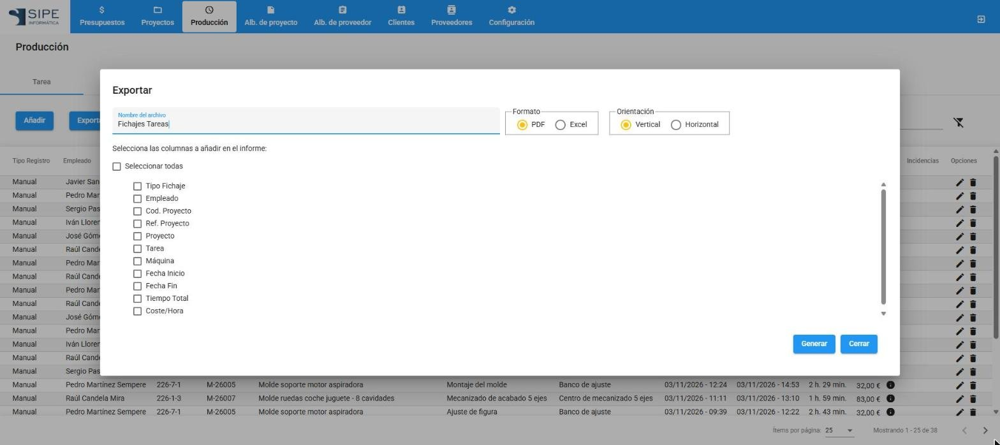

Se adapta a tu taller, no al revés
Defines una vez tus empleados, máquinas, fases de trabajo y materiales con sus costes, y todo el programa los usa para calcular precios y costes reales.
- Costes por hora de operarios y máquinas, con distintos tipos de cálculo.
- Fases y tareas en el orden en que trabajas.
- Perfiles y permisos: cada persona ve lo que le corresponde.


Lo que te llevas
Más allá de las pantallas, esto es lo que cambia en el día a día.
La estimación del presupuesto se compara con los fichajes y las compras según llegan.
Se usa desde el navegador del ordenador, la tablet del taller o el móvil.
Clientes, proveedores y albaranes se comparten con Classic Ges.
Tu logo, tus colores y tus textos legales en todos los documentos.
Perfiles de administrador y de empleado, con permisos por categoría.
Oficina, taller y compras trabajan sobre los mismos datos, cada uno desde su dispositivo.
¿Listo para empezar?
Configura tu empresa en unos pasos y haz tu primer presupuesto. Esta documentación te acompaña en cada uno.
¿Dudas? Consulta las preguntas frecuentes o visita sipeinformatica.com.